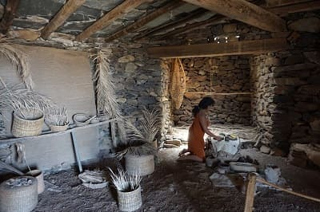
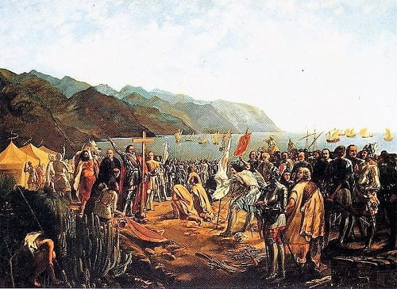
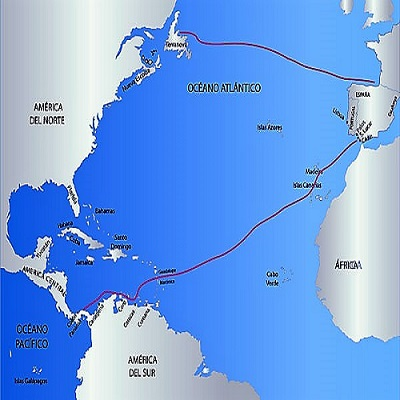

Se cree que los primeros pobladores de las islas pudieron llegar del norte de África entre el siglo V y el comienzo de la era cristiana. Pero algunas investigaciones han abierto la hipótesis que la llegada pudiera haberse dado incluso 5 siglos antes.
El motivo del desplazamiento a las islas por parte de tribus que se encontraban en Africa es incierto aunque podría haberse dado por luchas armadas entre ellas o por la ocupación romana. Desde su llegada crearon estructuras ecónomicas y sociales diferentes en las islas y hubo un aislamiento completo hasta la llegada de los conquistadores españoles en el siglo XV.
Al contrario que en la mayoría de las culturas antiguas que surgieron en el entorno de islas oceánicas aisladas, como el Pacífico sur, en Canarias no se han encontrado evidencias arqueológicas o documentales de la existencia de embarcaciones marineras o conocimientos de navegación. Las crónicas de los primeros europeos llegados a Canarias recogen el hecho de que los guanches habían perdido por completo los conocimientos sobre navegación, de modo que las distintas islas permanecieron aisladas unas de otras durante siglos, desarrollando modos culturales diferentes.
El origen de los pobladores del norte de Africa apunta al origen bereber ya que ha sido detectado que el genoma guanche y el genoma bereber coincide en más de un 50% de la carga genética. Además tiene similitudes en la escritura.
Al llegar los primeros canarios la fauna y la diversidad de las islas cambiarían al entrar animales domésticos y otras especies tanto animales como vegetales, pero sin duda, el cambio más grande llegaría con la entrada de los españoles.
Posiblemente, las islas fueron descubiertas por primera vez por el explorador cartaginés Hannón el navegante en su “Periplus”, el primer viaje de circunvalación africano, en el año 570 a. C. El primer documento escrito con una referencia directa a Canarias se debe a Plinio el Viejo, que cita el viaje del rey Juba II de Mauritania a las islas en el 40 a. C., y se refiere a ellas por primera vez como islas de los Afortunados (Fortunatae Insulae). En este documento también aparece por primera vez el término Canaria utilizado probablemente para hacer referencia a la isla de Gran Canaria. De acuerdo con Plinio, este nombre le fue dado a la isla en memoria de dos grandes mastines que los enviados de Juba capturaron allí y llevaron posteriormente a Mauritania (el actual Marruecos), y que aparecen representados a ambos lados del actual escudo de Canarias.
Esta historia, no obstante, tiene algunos visos de no ser exacta, entre otras cosas porque se sabe que a la llegada de los castellanos y otros navegantes europeos posteriores, las razas de perro nativas del archipiélago eran de pequeño tamaño, al igual que las cabras de los guanches, hoy persisten unos 'perros de presa canario', de gran porte y temida ferocidad. Actualmente, algunas teorías lo relacionan con el etnónimo norteafricano canarii, grupo bereber que se ubicaba en la zona noroccidental africana.1 De hecho el propio Plinio menciona en otro texto a los canarii, si bien de nuevo vuelve a relacionar este término con los perros. El historiador José Juan Jiménez defiende que el término «Canarii» alude a la existencia de lobos marinos.
Los romanos bautizaron a cada una de las islas como:
A continuación se describirá a los pueblos que habitaban las islas posiblemente cinco siglos antes a la llegada de los romanos.
 La sociedad aborigen canaria era patriarcal y matrilineal, y estaba dividida en estratos definidos por la riqueza, en cabezas de ganado especialmente. Cada isla se dividía en territorios cuyo rey era el guanarteme (Gran Canaria) o mencey (Tenerife). El sistema de clase era también diferente en cada una de las islas, y sólo se ha identificado claramente para los casos de Gran Canaria y Tenerife, donde se puede resumir con las categorías de nobles (habiendo varias categorías dentro de ésta) y pueblo. La pureza de sangre entre los nobles de alto rango era absoluta, y para llegar a ser mencey se tenía que demostrar dicha pureza. Para el caso concreto de Tenerife, según Juan Núñez de la Peña, se distinguían tres grupos sociales:
Posiblemente el Guanarteme o Mencey poseía la propiedad de la mayor parte del ganado. También se plantea la posibilidad de que el mencey también poseyera la propiedad de las canteras de extracción de materia prima para la producción lítica. La justicia se impartía en la plaza pública ('tagoror' en Tenerife, 'sabor' en Gran Canaria) por un grupo de notables, y según los primeros visitantes de las islas era extremadamente dura. El origen de los nombres de los habitantes de las islas es el siguiente:
La economía aborigen se basó fundamentalmente en la ganadería, con la excepción de Gran Canaria, en donde el desarrollo de la agricultura fue más importante. Debido a la práctica inexistencia de mamíferos oriundos de Canarias, el ganado con que contaban los primeros isleños fue traído desde sus zonas de origen, en el norte de África, y adaptado a las características ambientales del Archipiélago. Este consistía fundamentalmente de cabras y un tipo de oveja de piel lisa y sin lana, similar al tipo de oveja que durante milenios pobló el norte de África y cuyos descendientes habitan aún hoy en la zona del Sahel.17 La cabra y la oveja jugaron un papel fundamental en la subsistencia, usándose tanto su carne como su leche y mantequilla, así como las pieles para la elaboración de la indumentaria (vestidos tipo "tamarco" y otros), los huesos para una importante industria ósea (elaboración de punzones, agujas, elementos decorativos, etc) y la cornamenta (fabricación de tipos de arados manuales). También, aunque en menor medida, estaba presente el cerdo en las diferentes islas, al igual que el perro.
La agricultura era fundamentalmente cerealista, cultivándose especies de trigo y cebada, así como guisantes y otras legumbres. Uno de los usos principales de los cereales era la elaboración del tradicional gofio.
La subsistencia en las islas se completaba con la recolección de especies vegetales silvestres; la caza de animales, fundamentalmente aves y reptiles de gran tamaño; la pesca, mediante métodos rudimentarios para capturar los peces de las zonas intermareales, charcos y zonas de poca profundidad, así como el marisqueo, siendo habitual la concentración de grandes cantidades de restos de moluscos en diferentes yacimientos de Canarias.
 El pueblo guanche se caracterizó por tener un desarrollo cultural avanzado, correspondiente a un horizonte cultural protohistórico. Se trata de pueblos con rasgos culturales propios del ámbito bereber norteafricano, probablemente influenciados por las culturas fenicio - púnica e incluso latina, dado el contacto de estas civilizaciones con los nativos del norte de África en los tiempos de la expansión fenicia y romana.
El pueblo guanche se caracterizó por tener un desarrollo cultural avanzado, correspondiente a un horizonte cultural protohistórico. Se trata de pueblos con rasgos culturales propios del ámbito bereber norteafricano, probablemente influenciados por las culturas fenicio - púnica e incluso latina, dado el contacto de estas civilizaciones con los nativos del norte de África en los tiempos de la expansión fenicia y romana.
Las sociedades indígenas del archipiélago orientaron y alinearon astronómicamente algunos santuarios y puntos de observación, adoratorios, templos e incluso necrópolis.
La descentralización de la isla se daba en guanartematos donde el guanarteme era el lider de la comunidad.
En la imagen de la derecha podemos ver estutas representando los antiguos reyes Guanches.
En Gran Canaria, en un principio existían 10 guanartematos (Gáldar, Telde, Agüimes, Tejeda, Aquexata, Agaete, Tamaraceite, Artebirgo, Artiacar y Arucas), pero se unirían en un solo reino (Gáldar) debido a la campaña de unificación y conquista de la isla promovida por el caudillo Gumidafe (Gáldar) junto a su mujer adivina Andamana, poco antes de la conquista castellana se dividió en torno a dos grandes demarcaciones debido a que su nieto Taghoter Semidán tuvo dos hijos: Guanache Semidán guanartemato de Gáldar (Agaldad) y Bentanguaire Semidán guanartemato de Telde.

La conquista de las islas Canarias duró casi cien años, de 1402 a 1496, supuso la desaparición de gran parte de los elementos de la cultura aborigen en todas las islas, la conversión al cristianismo y el mestizaje entre colonos y población local.
Las Islas Canarias estaban habitadas antes de la conquista europea por distintas poblaciones que popularmente se han venido conociendo como guanches, aunque en realidad, cada isla tiene una denominación: Canarios (habitantes de Gran Canaria), Majos (Lanzarote y Fuerteventura), Benahorita (La Palma), Bimbaches (El Hierro) y Guanches (Tenerife). Los antiguos habitantes de Canarias eran un pueblo entroncado con los antiguos bereberes del norte de África.

A mediados del siglo XVI, la población del conjunto de las Islas Canarias, no superaba los treinta y cinco mil habitantes. Esta población se concentraba principalmente en las islas de Tenerife y Gran Canaria (aproximadamente las tres cuartas partes de total).
En Gran Canaria se aprecian dos fases diferenciadas marcadas por un crecimiento inicial y luego por un estancamiento poblacional para la segunda mitad del siglo XVI. A principios de siglo vivían menos de tres mil habitantes en la isla, población que aumentará hasta las ocho mil personas en torno a 1550, este crecimiento debe agradecerse a la inmigración desde la Península (tanto Portugal como España) así como a las importaciones de esclavos desde África y por supuesto al crecimiento natural, todo ello al amparo de la expansión de la economía azucarera. Pero a finales de dicha centuria la población apenas rebasaba aquella cifra y de hecho a principios del XVII incluso cae hasta los seis mil habitantes, siendo superada en este concepto por La Palma. Las causas de este estancamiento y luego retroceso fueron las destructivas invasiones piráticas de los años 90, las epidemias, las malas cosechas y la emigración causada por la crisis económica desencadenada con el fin del ciclo azucarero.
Inmediatamente después de la conquista, y durante la primera mitad del siglo XVI, se implantó en Canarias el cultivo de la caña de azúcar, introducido desde Madeira. Tuvo una gran expansión en Gran Canaria donde ocupó buena parte de las tierras del norte y este de la isla hasta los 500 metros sobre el nivel del mar. También adquirió importancia en las islas de Tenerife, La Palma y La Gomera.
Se trató de un cultivo de regadío que consumía grandes cantidades de agua y agotaba los suelos, por lo que requería permanentemente roturar nuevas tierras. Por otro lado, para la obtención del azúcar se requería el consumo de grandes cantidades de madera durante el proceso de cocción de la pulpa. Tres recursos escasos en las islas y, por tanto factores que contribuyeron a encarecer el producto.
El destino de la producción era la exportación hacia la Península Ibérica, Flandes, Francia y Génova. El control de este comercio estaba en manos de comerciantes extranjeros, especialmente genoveses y flamencos.
La rentabilidad del azúcar canario se mantuvo hasta que este cultivo se introdujo en América y comenzó a ser exportado hacia Europa. El menor coste de la producción americana determinará a mediados del siglo XVI el hundimiento del sector azucarero, afectando gravemente a la isla de Gran Canaria.
Tras la crisis del ciclo del azúcar, el vino se convirtió en el producto fundamental de las exportaciones canarias, a finales del siglo XVI, pero especialmente durante el siglo XVII. El auge vitivinícola coincidió con un periodo de precios altos que convirtieron en altamente rentable la producción canaria.
A principios del siglo XX los ingleses introdujeron en Canarias un nuevo monocultivo que será el plátano, cuya exportación era controlada por compañías comerciales como Fyffes, siendo Inglaterra el principal mercado para la fruta.
La rivalidad entre las élites de las ciudades de Santa Cruz de Tenerife y Las Palmas de Gran Canaria por la capitalidad de las islas, que se encontraba en la primera, llevará a que en 1927 se lleve a cabo la división del archipiélago en dos provincias.
Canarias fue justamente desde donde Franco inició la sublevación militar el 17 de julio de 1936, organizada por el general Mola, declarando el Estado de Guerra en todo el archipiélago al día siguiente.
Durante la posguerra, al igual que el resto del estado, Canarias padece un periodo de crisis donde el hambre y la miseria son frecuentes. Se produce de nuevo una oleada migratoria hacia Venezuela.
Hacia los años 70 comienza a producirse un cambio en la economía canaria con el auge del turismo. A partir de esos momentos la ganadería y la agricultura entrarán en un retroceso, a excepción de los monocultivos de exportación del plátano y el tomate.
Tras la muerte de Franco y la instauración de un régimen democrático de Monarquía Parlamentaria, se planteó la creación de un estatuto de autonomía para el archipiélago, estatuto que fue aprobado en el año 1982.
Desde entonces la progresión de Canarias ha sido espectacular, alcanzando cerca de 3 millones de habitantes y contribuyendo al PIB español de una manera notoria. Si bien aun permanecen diferencias en cuanto a salarios y nivel de empleo con respecto a la península la calidad de vida de las islas se puede considerar superior si tenemos en cuenta el clima y el ritmo de vida de éstas.
© 2016 - All Rights Reserved - Diseñada por Sergio López Martínez
![[Valid RSS]](https://www.feedvalidator.org/images/valid-rss-rogers.png "Validate my RSS feed")